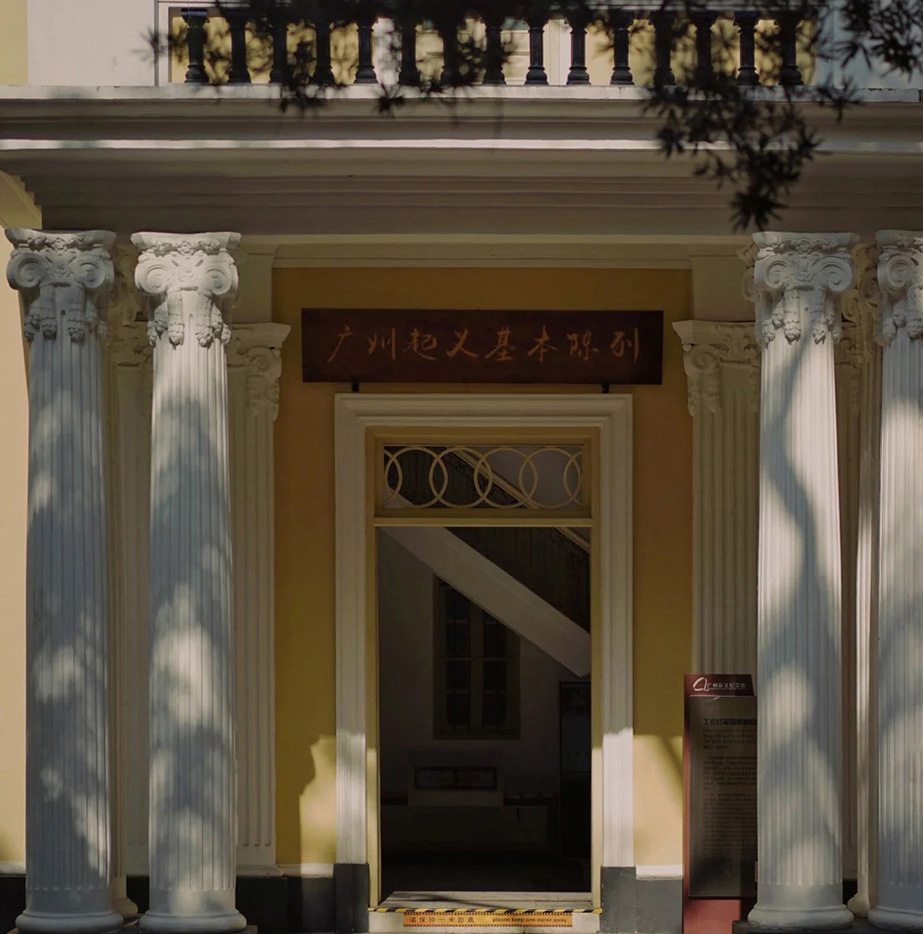

历史遗址
邓世昌纪念馆
邓世昌纪念馆 位于海珠宝岗大道龙涎里直街。始建于1834年。甲午中日海战中我们的民族英雄邓世昌壮烈牺牲，受清朝优抚，邓氏族人将
原祠拆平重建。祠堂为砖木结构，四角建角楼后院的池塘与园林别具岭南风格特色。1994年，邓世昌殉国100周年之际进行维修，辟为邓世昌纪念馆
位置：位于海珠宝岗大道龙涎里直街 附近的地铁站8号线 #同福西[地铁站]地点]#A出口，相距约 1.1km。
中山纪念馆
建城2200 多年的广州，是一座历史悠久且具有革命传统的英雄城市，拥有众多革命遗迹。其中，高耸于越秀山南麓的广州中山纪念堂是我国民族风格与外国近代建筑技术相结合的产物，是一座富有历史纪念价值的建筑物。它见证了广州的许多历史大事，富有纪念意义。
位置：越秀区东风中路299号地铁回 2号线纪念堂站D2出口 开放时间~9：00-17：30
怀圣寺
怀圣寺始建于唐代元至正3年 （1343年）被焚，7年后重建。清康熙 34年 （1695年） 再次修建，占地2966平方米。寺门西南隅为光塔，总高36.3米，正方为看月楼，重檐欲飞，具有中国建筑风格。
怀圣寺是伊斯兰教传入中国最早兴建的清真寺。又称光塔寺、怀圣光塔寺。现存有40 多方元代至民国时期的中、阿文碑匾。教崇西域牌匾为 1901年清光绪皇帝御赐给怀圣寺的珍贵文物。上盖有皇帝之宝御印。
位置：位于越秀老城区的光塔路。
市立中山图书馆
市立中山图书馆始建于 1929年。1927年6月，由当时相当于现在市长的林云陔提出筹建广州市立中山图书馆，后获美国、加拿大、墨西哥、古巴四国1.5万名华侨捐赠20多万美元，最后定址于久
负盛名的广府学宫此地从宋绍圣三年 (1097年）起，先后是广州府儒学（文庙）、番山书院等所在地。工程由当时著名的建筑学家林克明设计，
于1933年10月落成，系宫殿式建筑物，绿瓦朱檐，颇为壮观
位置：文德路 原为广州学宫旧址。

广州公社
对于广州起义这段历史，大多数人不知道或者已经记忆模糊了，但是它却促使建立了在中国第一个城市苏维埃政府-广州公社，也就是现在的广州起义纪念馆，被誉为“东方巴黎公社”
馆内现在开放的有门楼、南楼、中楼，分别陈列着广州起义各个阶段的历史资料、印章家书、工貝等而这里的明黄色的西洋建筑外观在阳光与罗汉松的呼应下，也显得格外独特；
位置：广州市越秀区起义路200-1号 地铁一1二号线公园前站J出口